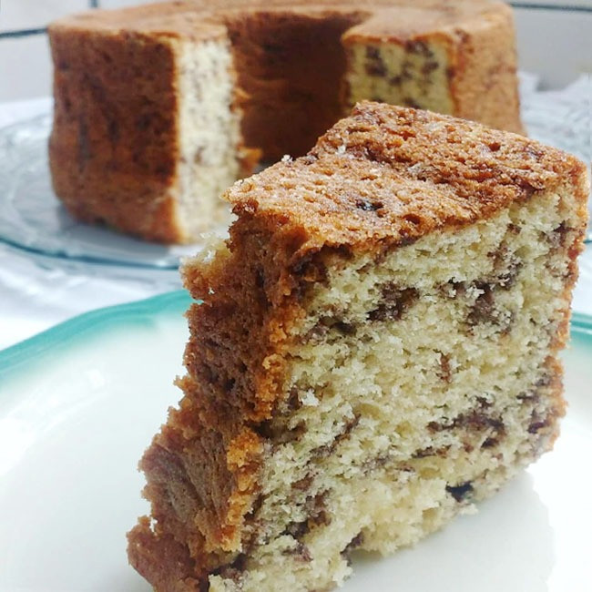

✱ Voltar
Bolo Formigueiro
Autora: Dona Genoveva

Ingredientes:
- 4 colheres de sopa de margarina
- 1 1/2 copo de açúcar
- 4 ovos (claras em neve)
- 2 copos de farinha de trigo
- 1 copo de leite
- 100 g de chocolate granulado
- 100 g de coco ralado
- 1 colher (sopa) de fermento em pó
Modo de preparar:
- Bata a margarina com o açúcar
- Junte as gemas e continue batendo
- Acrescente o leite e os demais ingredientes
- Acrescente as claras em neve
- Leve para assar em forno quente